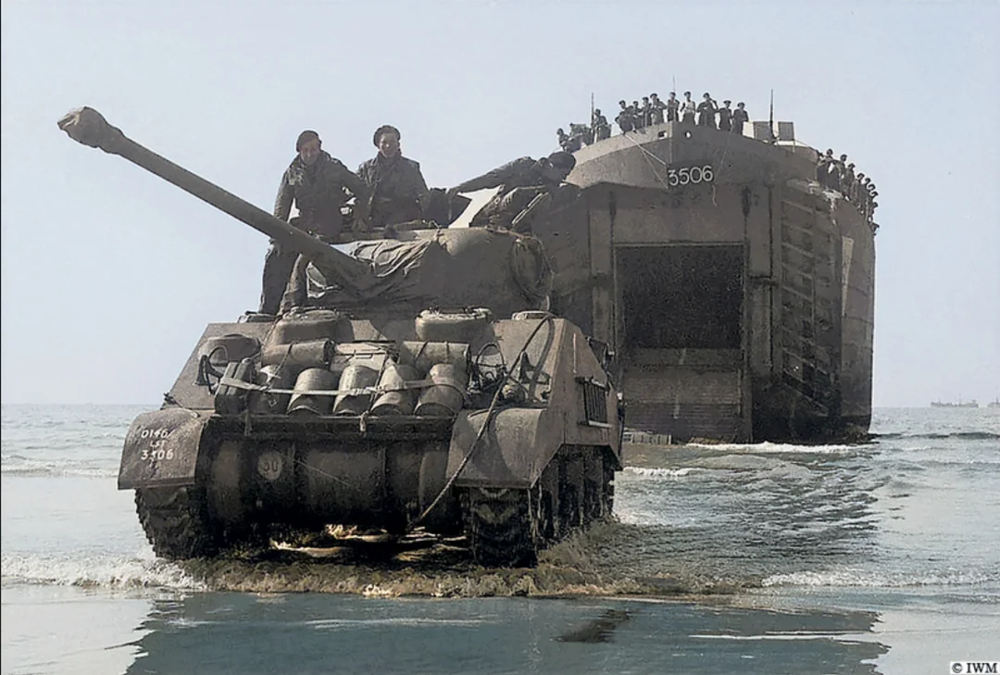

Welcome to The Tank Store
Legality not guaranteed!Featured Product of this month
| Image | Name | Armour (front/ side/ rear) | Armaments | Stock | Price | |
|---|---|---|---|---|---|---|
 |
Sherman M4A1 | 50.8mm - 88.9mm / 38.1mm - 50.8mm / 25.4mm - 50.8mm | 75mm Gun M3 | 10 | $275,000 |
Why should you choose this tank?
|
The M4A1, officially Medium Tank, M4, is the most widely usd medium tank by the US and its
Western Allies in WWII. The tank is made to be reliable, cheap to produce in large numbers, and was the backbone of many Allied advances. With its powerful 75mm gun, it was more than capable of taking on all the German Panzers before the introduction of the Tiger and Panther tanks, meanwhile able to protect its crew from the enemy fire. |
 |
|
with the QF-17 pounder gun by the British landing on Omaha Beach |